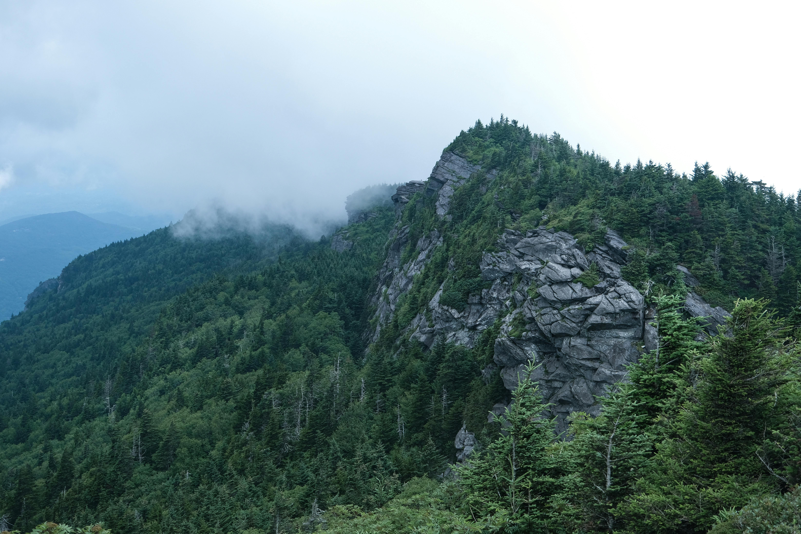
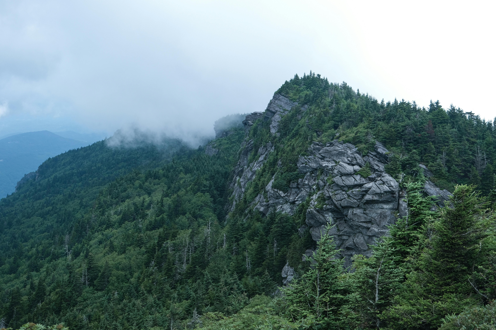

Introduction to North Carolina Hiking
Mountains are majestic natural formations that rise prominently above their surroundings, offering breathtaking landscapes and diverse ecosystems.
Mountains are majestic natural formations that rise prominently above their surroundings, offering breathtaking landscapes and diverse ecosystems.
 


The Blue Ridge Mountains, Hanging Rock, Mount Mitchell, and The Great Smoky Mountains are some of the most iconic mountain ranges in North Carolina.
North Carolina is home to a variety of trails that cater to hikers of all skill levels. Whether you are a beginner or an experienced hiker, you will find a trail that suits your needs. From easy, family-friendly trails to challenging, strenuous trails, North Carolina has it all. Here are some of the most popular trails in the state: